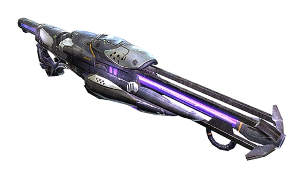

I think a dev log might be a good idea for my current projects. I basically have 3.

Project #1 is this website, it's not perfect, but I still do most of my coding on this site even though I want to get better at using React features with Next.js
Project #2 is my current Next.js practice project where I'm just trying to play around with it and see if I can actually benefit from it's routing system and reusable components. So far so good, but the DB stuff is always tricky for me and tailwind css is nice, but the whole framework of Next is a lot to get used to. Having different parts of the site with different layouts or similar layouts is something I haven't taken advantage of yet, but I can see how for a site like this it'd be great to have a standard style and template for new pages. Usually, with this page for example, I either start fresh or borrow from another HTML and CSS file and alter the content.
Project #3 is my Unreal Engine projects. I am currently working on the Shock Rifle demo, and I just added A.I. enemies today that follow you around. I also have some other Unreal Projects in Third Person like one you can toggle Ghost Mode and go through walls and floors and ceilings, or one with attack animations and coin collection, magic carpets and teleportation. I'm definitely getting better at Unreal and that's really cool. But both Next.js and Unreal Engine are tough because they're industry standard and top of the line. It's a lot to handle for a solo dev.
Soon I'll be starting a career as a Server Test Technician, full-time, and also I might have an opportunity to do A.I. remote software engineering as an independent contractor. So I won't have as much time for my personal projects but at least I'll start to be able to fund my future projects and secure a lucrative career in computer science.
© Jann Software 2024